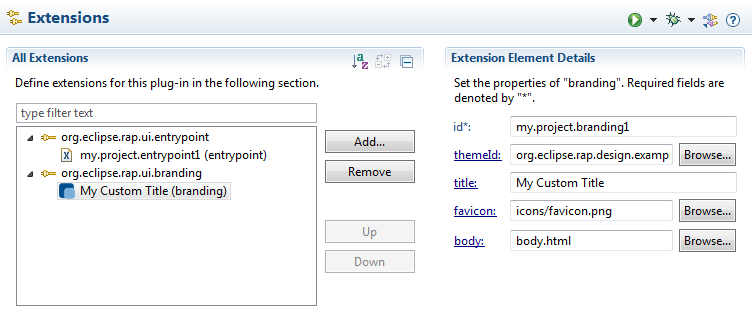

RAP with OSGior
RWT Standalonesetup, see
Application Configuration.
With the help of RAP's branding features you're able to define several (visual) aspects of your RAP application. This includes for example the page title which is shown in the browser or the theme to be used for the application.
If you haven't done so already, define an org.eclipse.rap.ui.entrypoint extension. Use the attribute path to specify the URL path for the entry point.
<extension point="org.eclipse.rap.ui.entrypoint">
<entrypoint id="example.entrypoint"
class="example.MyEntryPoint"
path="/example" />
</entrypoint>
</extension>
Unless you want to use the IApplication interface (see below), let the class attribute point to your implementation of the EntryPoint interface. (If the workbench is not used for the UI, it is recommended to extend AbstractEntryPoint.)
If you want to use the IApplication interface, leave the class attribute of your entry point extension empty and create an org.eclipse.core.runtime.applications extension (in addition to the entrypoint extension). Set your IApplication implementation in the class attribute, then specify the id of the application extension in your entry point extensions applicationId:
<extension point="org.eclipse.rap.ui.entrypoint">
<entrypoint id="example.application.entrypoint"
path="/example"
applicationId="example.application" />
</entrypoint>
</extension>
Now you can define a new branding by creating an extension for the org.eclipse.rap.ui.branding extension point. Give the branding an id, then set the same id in your entry point extension's brandingId attribute. The branding is now associated with your EntryPoint or IApplication implementation. A typical branding may look like this in the extension point editor:
And here the same as it appears in the plugin.xml:
<extension
point="org.eclipse.rap.ui.branding">
<branding
id="my.project.branding1"
title="My Custom Title"
favicon="icons/favicon.png"
body="body.html"
themeId="org.eclipse.rap.design.example.business.theme">
</branding>
</extension>
The id is used to reference the branding in a org.eclipse.rap.ui.entrypoint extension.
The id of the theme to be used for this branding. The theme must be defined by an extension of org.eclipse.rap.ui.themes. Without this parameter, the RAP default theme will be used. See also RWT Theming.
To define the title which will be shown in the browser title or the the title of
the browser tab, you can use the title attribute.
The favicon is a 16x16 pixel square icon shown in the browser's address bar or tab. To be compatible with legacy browsers, use a file in the ICO format.
An optional file containing an HTML snippet to be included in the RAP index page. This snippet will be included in the body element of the generated index page. That way a simple splash screen can be implemented. Please note that the preferred way of styling the application background is to add a theming for the Display background property.
An optional sub-element of a branding extension, that allows to add <meta> or <link> tags to the <head> of the generated index page. Here's an example:
<additionalHeaders> <meta name="author" content="Arthur Dent"> </meta> </additionalHeaders>
Available tags are <meta> and <link>. You can add more additional attributes to each tag with the attribute element.